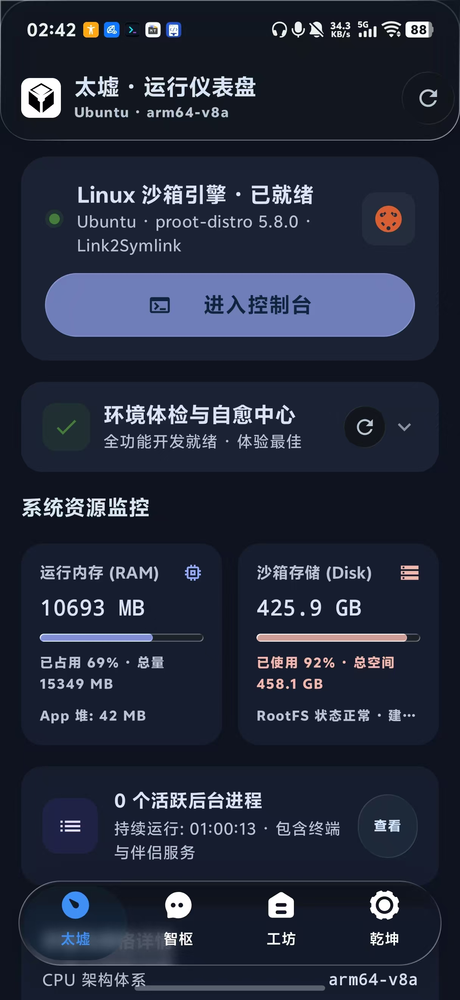
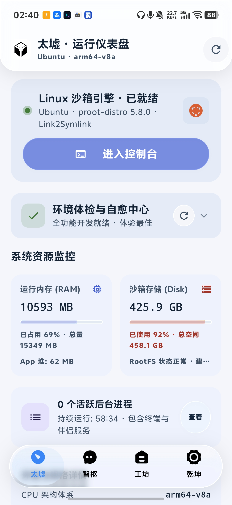
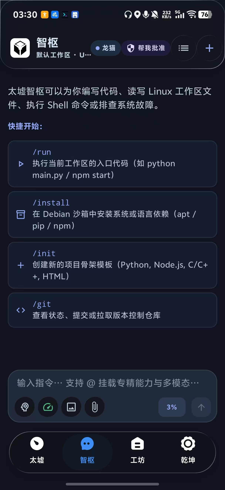
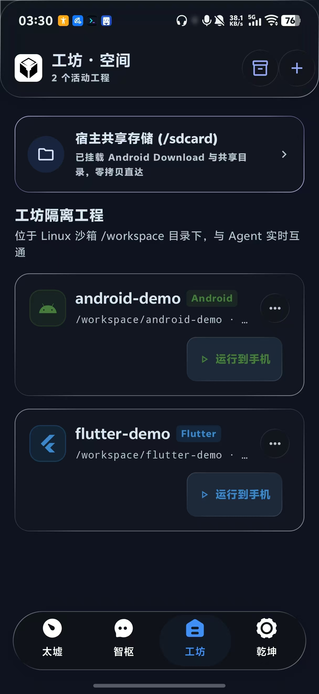
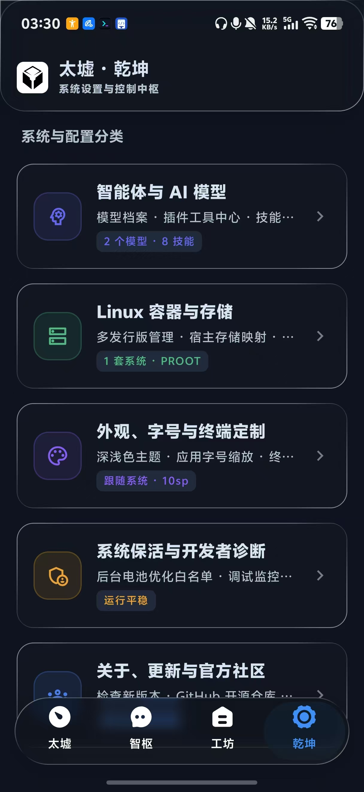

壹
LINUX RUNTIME
无 Root，衍化诸界
基于 PRoot 运行完整 Linux 用户空间。多发行版安装、切换、更新与持久化，都在 Android 沙盒中有序发生。
DEBIANUBUNTUARCHALPINEKALIFEDORA
掌中归墟，万象可期。
无需 Root，在 Android 上运行完整 Linux、AI Agent、原生终端与工程工作区。


模型在这里获得语言，工具获得双手，终端保存因果，工作区赋予记忆以位置。
万象承认 Android 的边界，并在边界之内建立一套可运行、可观察、可持续演化的 Linux 世界。
“掌中归墟，万象可期。”
以下全部来自 Android 真机。智枢负责把意图变成行动，工坊承载项目与共享存储，乾坤管理模型、Linux 环境和整套系统配置。



从运行环境到智能体，从工具执行到工程构建，万象将分散的能力编织成一条完整链路。
基于 PRoot 运行完整 Linux 用户空间。多发行版安装、切换、更新与持久化，都在 Android 沙盒中有序发生。
流式推理、工具调用、MCP 与子智能体协作汇成持续执行循环。
JNI forkpty、ANSI/VT100、多会话与动态 Resize。不是文本模拟，而是真实进程与控制终端。
文件浏览、代码编辑、宿主存储映射，以及 Agent 与终端共享的工程上下文。
工具安装事务、服务管理与高风险操作审批，让能力、状态和失败路径都清晰可见。
在线 Registry 与本地 .txplugin 各有清晰来源标识。本地包由清单与离线 payload 组成，可声明 ARM64 架构、安装步骤、命令入口、实时进度和能力元数据。
{
"id": "hello-arm64",
"launchType": "command",
"architectures": ["ARM64"],
"offlineOnly": true,
"commandLinks": ["hello"]
}每一步都有上下文，每一次执行都有回声。未完成，便继续。
万象仍在快速演进。欢迎下载体验、阅读源码，或一同参与这个掌上计算世界的建造。